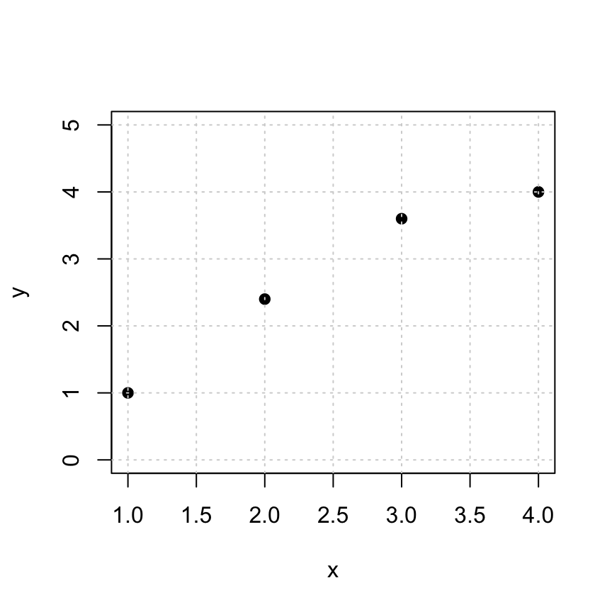
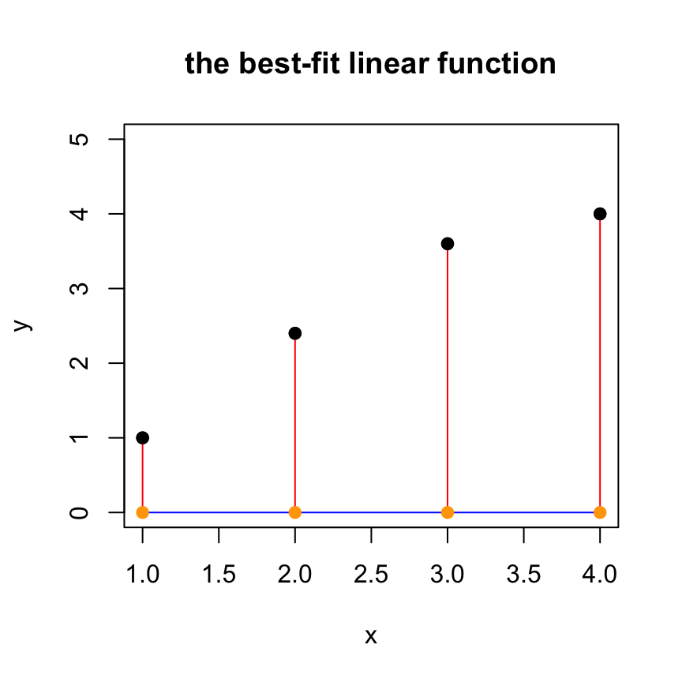
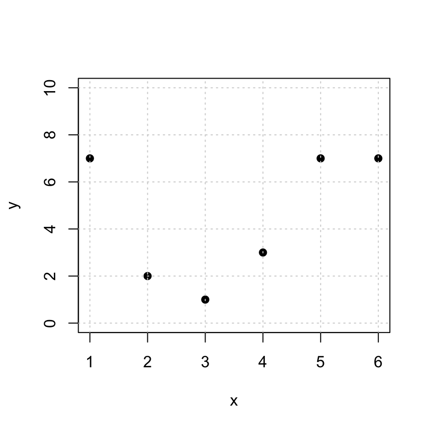
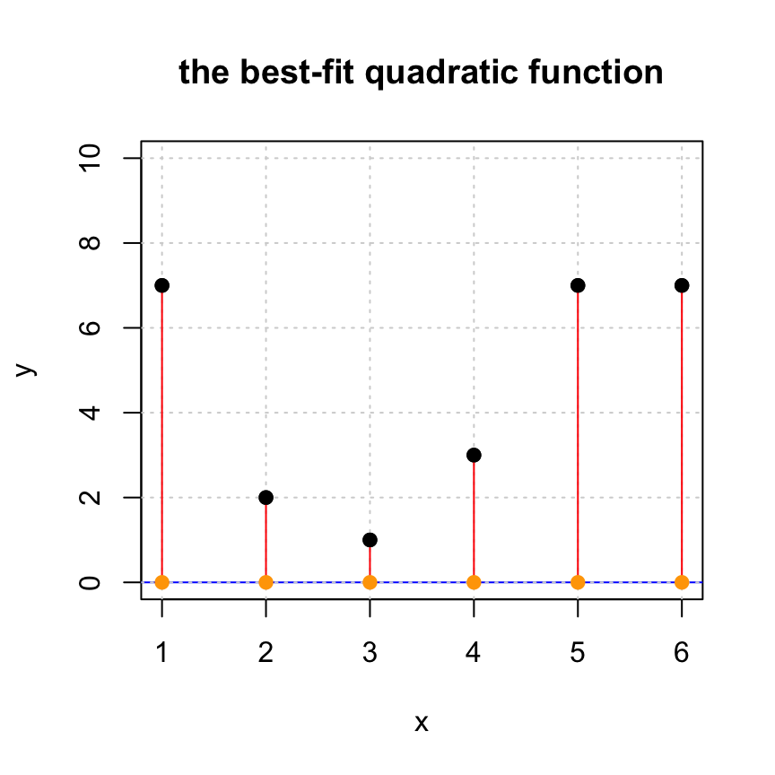
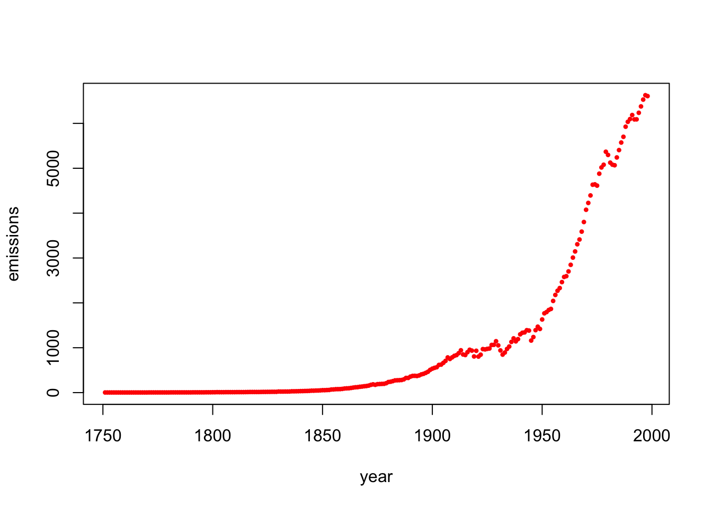

Vector 26 Least Squares Approximation
26.1 Introduction
Let’s start with a summary of Least Squares Approximation.
The Why: Given a matrix \(A\) and a vector \(\mathsf{b}\) that is not in \(W = \mathrm{Col}(A)\), we want to find the “best approximate solution” \(\hat{\mathsf{b}} \in W\). In other words, we want to pick the best possible \(\hat{\mathsf{b}} \approx \mathsf{b}\) that lies in the column space of \(A\).
The What: The answer is to use projections.
- This “best approximation” is the projection \(\hat{\mathsf{b}} = \mbox{proj}_W \mathsf{b}\).
- The residual vector vector \(\mathsf{z} = \mathsf{b} - \hat{\mathbf{b}}\) is in \(W^{\perp}\).
- The length \(\| \mathsf{z} \|\) of the residual vector measures the closeness the approximation.
- The approximate soltuion to our original problem is the vector \(\hat{\mathsf{x}}\) such that \(A \hat{\mathsf{x}} = \hat{\mathsf{b}}\).
The How: A clever way to solve this is to use the normal equations. The best choice for \(\hat{\mathsf{x}}\) satisfies \[ A^{\top} A \hat{\mathsf{x}} = A^{\top} \mathsf{b}. \] Here is a template for the R code that will find the least squares solution \(\hat{\mathsf{x}}\), the projection vector \(\hat{\mathsf{b}} = \mbox{proj}_W \mathsf{b}\) and the residual vector \(\mathsf{z} = \mathsf{b} - \hat{\mathsf{b}}\). You should read this code line-by-line and make sure that you understand what it is doing!
# Given: the matrix A
# Given: the target vector b
#solve the normal equation
(xhat = solve(t(A) %*% A, t(A) %*% b))
# find the projection
(bhat = A %*% xhat)
# find the residual vector
(z = b - bhat)
# check that z is orthogonal to Col(A)
t(A) %*% z
# measure the distance between bhat and b
sqrt( t(z) %*% z)
26.2 Fitting for a Linear Function
Here are some points that we’d like to fit to a linear function \(y = cx+d\).
Note: Here we use y instead of b because we like to write linear equations as “\(y = cx + d\).” So the expression “\(b = cx +d\)” looks funny to us. So we will talk about y and yhat instead of b and bhat.

To find a perfect fit line \(y = d + cx\) to the data, we need to solve the following \(Ax = y\) problem: \[ \begin{bmatrix} 1 & 1 \\ 1 & 2 \\ 1 & 3 \\ 1 & 4 \\ \end{bmatrix} \begin{bmatrix} d \\ c \end{bmatrix} = \begin{bmatrix} 1 \\ 2.4 \\ 3.6 \\ 4 \end{bmatrix} \]
These equations are inconsistent, so we solve the normal equations \(A^T A x = A^T y\) and find an approximate solution instead. Pro Tip: a clever way to create the desired matrix \(A\) is to use the fact that \(x^0=1\) for any number \(x\).
## x
## [1,] 1 1
## [2,] 1 2
## [3,] 1 3
## [4,] 1 426.2.1 Your Turn
Use the template code above to find xhat. This is the “least squares solution” that approximates the coefficients \(c, d\).
26.2.2 Plotting your least squares solution
The following code gives you a visualization of the approximate solution.
- The black points: the original data points
cbind(x,y). This represents the entries of the desired target vectory. - The blue curve: the fitted curve, created from the approximate solution
xhat.
- The orange points: the approximations
cbind(x,yhat)of the data pointscbind(x,y). This represents entries of the projectionyhat. - The red line segments: the distances between the original data points (block dots) and their approximations (orange dots). The lengths of these red segments are the entries of the residual vector
z
plot(x,y,pch=19,ylim=c(0,5), main='the best-fit linear function')
yhat = A %*% xhat
tt = seq(1,4,len=100)
lines(tt,xhat[1]+xhat[2]*tt,col='blue')
for (i in 1:length(x)) {
lines(c(x[i],x[i]),c(y[i],yhat[i]), col='red')
}
points(x,yhat,pch=19,col='orange')
points(x,y,pch=19,col="black")
26.3 Fitting a Quadratic Function
It might surprise you at first that we can use linear algebra to fit a quadratic function. But remember: we are fitting the coefficients. Once we plug in our empirical data, we have a linear combination of the unknown coefficients!
So let’s fit a quadratic function \(y = a_0 + a_1 x + a_2 x^2\) to the following data:

In this case, the linear model that we’d like to solve is: \[ \begin{bmatrix} 1 & 1 & 1\\ 1 & 2 & 4 \\ 1 & 3 & 9 \\ 1 & 4 & 16 \\ 1 & 5 & 25 \\ 1 & 6 & 36 \\ \end{bmatrix} \begin{bmatrix} a_0 \\ a_1 \\ a_2 \end{bmatrix} = \begin{bmatrix} 7 \\ 2 \\ 1 \\ 3 \\ 7 \\ 7 \end{bmatrix}. \]
Again, this is inconsistent (go ahead and check if you want to). So we need to find the best approximate solution. I will make the \(A\) matrix for you one more time. (You’ll have to construct it in the examples below.)
26.3.1 Your Turn
Use the template code above to find xhat. This is the “least squares solution” that approximations of the coefficients \(a_0, a_1, a_2\).
26.3.2 Plotting your least squares solution
Note: this code assumes that you have defined xhat
yhat = A %*% xhat
# plotting the solution
plot(x,y,pch=19,ylim=c(0,10), main='the best-fit quadratic function')
tt = seq(0,7,len=100)
lines(tt,xhat[1] + xhat[2]*tt + xhat[3]*tt^2,col='blue')
grid()
# adding the residual lines
for (i in 1:length(x)) {
lines(c(x[i],x[i]),c(y[i],yhat[i]), col='red')
}
points(x,yhat,pch=19,col='orange')
points(x,y,pch=19,col="black")
26.3.3 Your turn
If you have not already done so, you should
- Find the residual vector \(z\). Compare the entries (positive, negative) with the red line segments in the plot above.
- Find the length of \(z\). This is a measure of the quality of the approximation: the smaller, the better!
- Confirm that \(z\) is orthogonal to \(\mbox{Col}(A)\). (You may want to use
zapsmall().)
26.4 A Linear Model for Production at a Hosiery Mill
Here is a data set from a 1940’s hosiery mill. It measures monthly production output and total production cost. The data come from the article “Statistical Cost Functions of a Hosiery Mill”, by Joel Dean in Studies in Business Administration, vol. 14, no. 3, 1941.
units.produced =c(561.0, 506.16, 502.32, 519.48, 505.44, 501.36, 497.64,
506.52, 492.36, 478.08, 469.8, 470.4, 474.24, 456.6, 469.92,
463.08, 438.48, 444.36, 439.2, 450.96, 437.76, 459., 447.12,
463.08, 490.68, 451.92, 465.48, 465.36, 440.4, 421.2, 405., 411.48,
387.12, 371.64, 338.4, 294.96, 243., 205.08, 172.2, 157.32, 114.,
116.88, 112.08, 90.12, 100.2, 75., 65.4, 45.48)
production.cost = c(92.64, 88.81, 86.44, 88.8, 86.38, 89.87, 88.53, 91.11, 81.22,
83.72, 84.54, 85.66, 85.87, 85.23, 87.75, 92.62, 91.56, 84.12,
81.22, 83.35, 82.29, 80.92, 76.92, 78.35, 74.57, 71.6, 65.64,
62.09, 61.66, 77.14, 75.47, 70.37, 66.71, 64.37, 56.09, 50.25,
43.65, 38.01, 31.4, 29.45, 29.02, 19.05, 20.36, 17.68, 19.23,
14.92, 11.44, 12.69)Fit a linear model between the units produced and the production cost.
\[p=\beta_0+\beta_1 u,\]
where \(u\) is the number of units produced in a given month (in thousands), \(p\) is the monthly production cost (in $1000s). The constant \(\beta_0\) represents the fixed costs for running the hosiery mill and \(\beta_1\) represents the variable cost per production of 1000 units.
Use least squares approximation to find the best fitting linear function for this data. Look at the previous two examples for how to create your matrix \(A\).
Look at your least squared solution. What are the monthly fixed costs? What are the variable costs per 1000 units?
Plot the data along with your linear function.
Optional: Compute the length of the residual vector
Optional: Confirm that the residual vector is orthogonal to both columns of the coefficient matrix.
# your least squares code goes here
x = units.produced
y = production.cost
A = NULL
# you must define A and xhat- **Note: this code assumes that you have defined
xhatandxandyandA.
26.5 Global Fossil Fuel Emissions
Now let’s fit a curve to global fossil fuel emmissions between 1751 and 1998. The fossil fuel emissions are measured in megatons of carbon. Here is a plot of the data.
year=c(1751:1998)
emissions = c(3, 3, 3, 3, 3, 3, 3, 3, 3, 3, 3, 3, 3, 3, 3, 3, 3, 3, 3, 3, 4, 4, 4, 4, 4, 4, 4, 4, 4, 4, 5, 5, 5, 5, 5, 5, 5, 5, 5, 5, 6, 6, 6, 6, 6, 6, 7, 7, 7, 8, 8, 10, 9, 9, 9, 10, 10, 10, 10, 10, 11, 11, 11, 11, 12, 13, 14, 14, 14, 14, 14, 15, 16, 16, 17, 17, 18, 18, 18, 24, 23, 23, 24, 24, 25, 29, 29, 30, 31, 33, 34, 36, 37, 39, 43, 43, 46, 47, 50, 54, 54, 57, 59, 69, 71, 76, 77, 78, 83, 91, 95, 97, 104, 112, 119, 122, 130, 135,
142, 147, 156, 173, 184, 174, 188, 191, 194, 196, 210, 236, 243, 256, 272, 275, 277, 281, 295, 327, 327, 356, 372, 374, 370, 383, 406, 419, 440, 465, 507, 534, 552, 566, 617, 624, 663, 707, 784, 750, 785, 819, 836, 879, 943, 850, 838, 901, 955, 936, 806, 932, 803, 845, 970, 963, 975, 983, 1062, 1065, 1145, 1053, 940, 847, 893, 973, 1027, 1130, 1209, 1142, 1192, 1299, 1334, 1342, 1391, 1383, 1160, 1238, 1392, 1469, 1419, 1630, 1767, 1795, 1841, 1865, 2043, 2177, 2270, 2330, 2463, 2578, 2595, 2701, 2848, 3009, 3146, 3306, 3412, 3588, 3802, 4075, 4227, 4394, 4633, 4641, 4613, 4879, 5018, 5078, 5368, 5297, 5125, 5080, 5067, 5241, 5405, 5573, 5701, 5926, 6035, 6096, 6186, 6089, 6090, 6236, 6378, 6530, 6628, 6608)
plot(year,emissions,pch=20,cex=.7,col="red")
The data suggest that the fossil fuel emissions \(f\) follow an exponential model with respect to the year \(y\): \[f = a e^{k(y-1750)},\] where \(a\) and \(k\) are the unknown constants. How do we fit our data in this case? Just take the logarithm of both sides! Doing so yields the following linear system: \[\log(f)=\log(a)+k(y-1750).\]
- Note: This process works for any logarithm, but it is common to use the natural logarithm (use
log()in R). - Note: To simplify even further, define
time=year-1750before forming your set of linear constraints. This results in the model
\[ \log(f)=d+kx,\] where \(b=\log(a)\) and \(x\) is time (since 1750),
- Use least squares approximation to find the best fitting exponential function for this data. This will give you the values for \(b\) and \(k\), and once you know \(b\), you can find \(a = \exp(b)\). We have started the code for you by defining
x=year-1750andy=log(emissions).
### your code goes here.
# be sure to define d and k and A
x=year-1750
y=log(emissions)
A=NULL
b=1
k=1
#####
# your code above has found b and k
(a = exp(b))## [1] 2.718282## [1] 1Run the code below to plot the original data along with your exponential model curve \(f(t)\).
Note: This code assumes that you have already defined the values for
Aandkanda. Otherwise, it will not work!